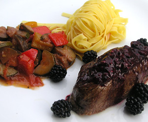

Rindsfilet an Brombeersauce
5 von 6Ca. 15 Brombeeren in etwas Butter andämpfen und etwas vermantschen. Mit Salz und Pfeffer würzen, etwas einkochen. Nebenbei in einer Bratpfanne pro Person ca. 200 g Rindsfilet sehr heiss anbraten, im Ofen bis zum gewünschten Garpunkt nachgaren. Weitere 15 ganze Brombeeren zur Sauce und etwas Balsamico Essig dazugeben und aufwärmen, über das Rindsfilet geben und servieren.
